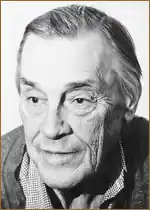
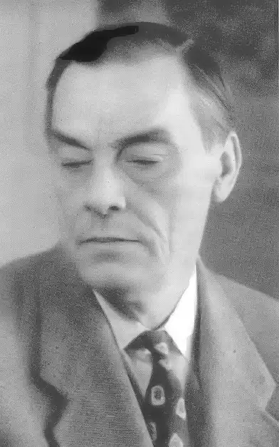

24.06.1907 року — 27.05.1989 року
Тарковський Арсеній Олександрович народився в Єлисаветграді у родині народовольца. Дитячі та юнацькі роки припали на важку пору російської історії, що майбутній поет відчув повною мірою.
У 1920-ті роки Тарковський живе в Москві, з 1924 року працює в редакції газети "Гудок", протягом двох років веде відділ віршованого фейлетону. У 1925 році вступає на навчання на Вищі державні літературні курси, які закінчує у 1929 році. Пише вірші, публікує їх у студентському збірнику(1926). З 1932 року активно займався перекладами, приділяючи особливу увагу класичній поезії Сходу. Йому належать переклади віршів з туркменського, вірменської, грузинської, арабської мови. Під час Вітчизняної війни працював в армійській газеті "Бойова тривога". Свої вірші Тарковський довго непубликует, вони з'являються в пресі, коли поетові вже 50 років. Потім протягом двадцяти років у різних журналах і альманахах були надруковані вірші, що склали шість поетичних збірок: "Перед снігом" (1962); "Землі земне" (1966); "Вісник" (1969); "Поезії" (1974); "Зимовий день" (1980); "Вибране" (1982). У 1983 році виходять "Вірші різних років", які об'єднали кращі з надрукованих. Остання книга поета — "Від юності до старості". А. Тарковський завжди тримався далеко від літературної суєти, багато років жив в Передєлкіно. Йому належать теоретичні і критичні статті та рецензії. Помер у Москві.